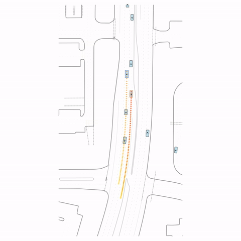
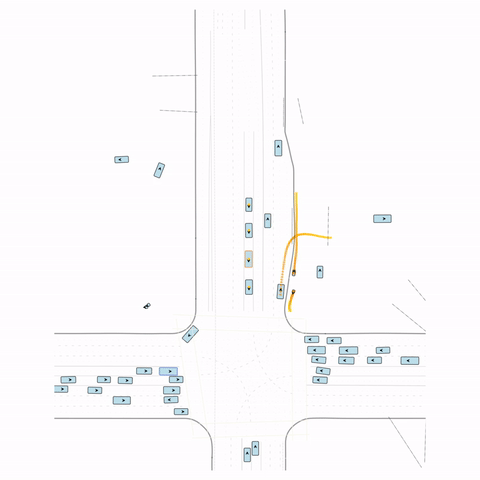
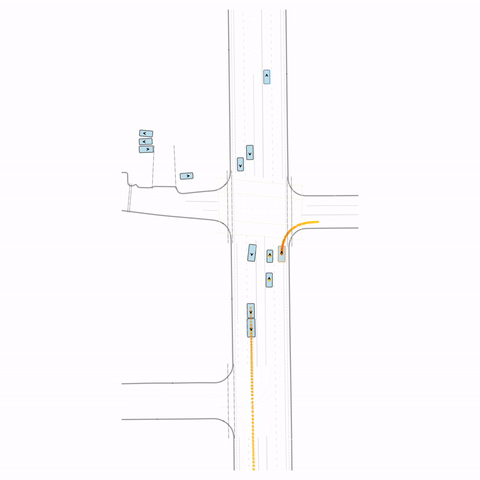
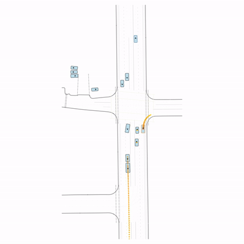
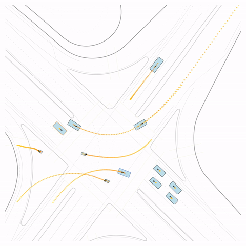

Qualitative Visualization: Pre-Training vs. Post-Training
Side-by-side comparison of the base model (pre-train) and RLFTSim (post-train) on challenging traffic scenarios.


Figure 1 — Collision & Off-road: The pre-trained model generates unrealistic off-road behavior and a collision with cross-traffic, while the post-trained model (RLFTSim) produces realistic lane-following behavior that respects traffic rules.


Figure S1 — Collision 1: In the pre-trained model, the vehicle entering the circle fails to yield to the pedestrian and collides with it. In the post-trained model, the vehicle yields to the pedestrian.


Figure S2 — Collision 2: The pre-trained model produces a rear-end collision between two vehicles at the bottom of the scene. The post-trained model avoids this accident.


Figure S3 — Collision 3: The pre-trained model's parked vehicle attempts to enter the road, colliding with a passing vehicle. The post-trained model waits for the road to clear before entering.


Figure S4 — Off-road: The pre-trained model's cyclist goes off-road. The post-trained model (RLFTSim) adheres to the drivable area.